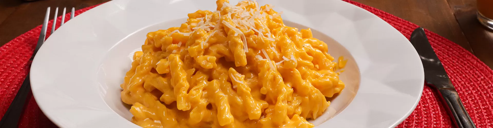

Delicioso Macarrão Mini Parafuso com
molho cremoso de queijo cheddar.

Modo de preparo
1 Coloque a manteiga na panela e deixe derreter. Acrescente o macarrão e junte o leite quente.
2 Rale o queijo parmesão. Acrescente ao macarrão e junte o cheddar. Tempere com pimenta-do-reino a gosto. Se precisar, corrija o sal.
3 Para uma textura mais cremosa, acrescente um pouco mais de leite.
Receita:
Clique para ver o video da receita
Voltar para a lista de receitas